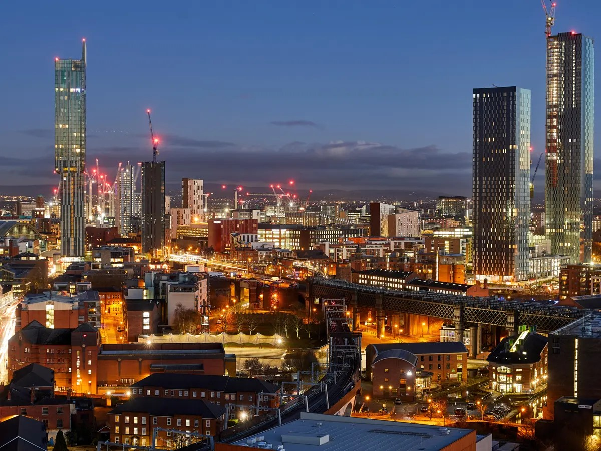

Home
manchester united
manchester city
salford quays
hyde wernorth low
Home
manchester united
manchester city
salford quays
hyde wernorth low
Step into the dynamic and diverse city of Manchester, where a plethora of experiences and events are on offer for residents and visitors alike. From exhibitions that showcase creative expression to live theatre at various venues around the city, Manchester's cultural scene is ever-evolving. Stay tuned for the latest gigs and concerts, taking place at iconic stadiums and intimate venues alike. Dive into the eclectic festivals throughout the year that bring the city alive with celebrations and cultural exchanges. Immerse yourself in world-class sport, from football and cricket to rugby and cycling. Whether you're strolling through markets, exploring museums, or partaking in the vibrant nightlife, Manchester's lively atmosphere ensures there's always something exciting happening across the region. From arts and exhibitions to comedy and entertainment, Manchester offers a fantastic number of events throughout the year, catering to a wide range of interests and passions. Immerse yourself in the vibrant cultural scene with thought-provoking exhibitions at many of the city's museums and galleries, from the Science and Industry Museum to the National Football Museum. Headline concerts at AO Arena and Co-op Live complement breakthrough artists at some of the city's more intimate venues such as Band on the Wall, Deaf Institute, Night & Day Café, and Matt & Phred's. Theatre-goers will be in their element, with established productions and innovative performances taking place at Manchester Opera House, Palace Theatre, Aviva Studios, The Lowry, Royal Exchange Theatre, and many more. Sports enthusiasts will find themselves immersed at the iconic Old Trafford and Etihad Stadium, but also across many other sports including cricket's Emirates Old Trafford, swimming, and cycling. Whether you're a music lover, art aficionado, history buff, or sports enthusiast, Manchester's calendar of events promises an eclectic and dynamic experience that reflects the city's vibrant spirit.
What is Manchester famous for history? Manchester's pioneering history accounts for its unique character – this is the place where the industrial revolution really took hold. The canals that course through the city are a reminder of its history of textiles and trade. In the 19th century Manchester grew dramatically on the wealth created by cotton.